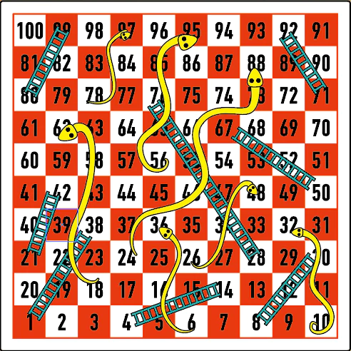
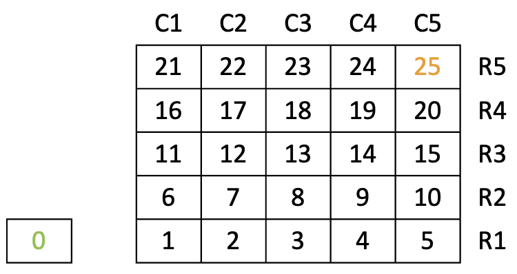
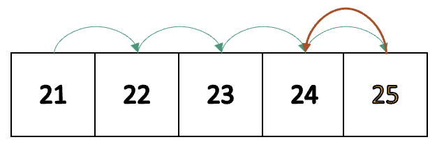
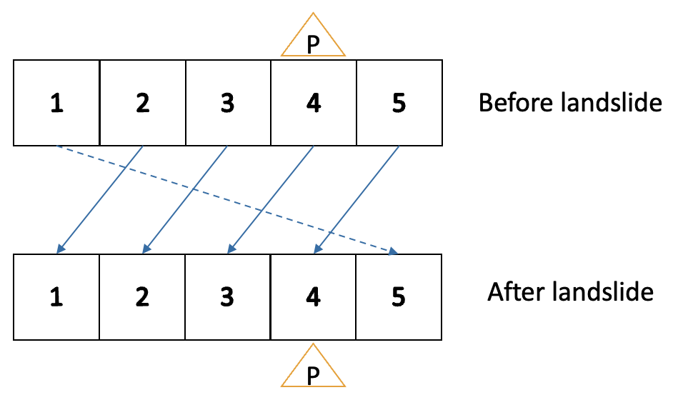

 Fig 1: Game board (Source: Yellow Mountain Imports)
Introduction
Snakes and Ladders is a classical multi-player board game. The game is played on a sqaure game board with numbered cells and fixed number of “snakes” and “ladders”. Players take turns to move and compete on reaching the ending cell.
In this lab, you are going to implement a single player version of the game using pointers. We provide the skeleton code for you to start the lab.
Reminder: This lab has been modified from April 6th's version. Please DO NOT use code from that version.
Description
Board and Cells
The game board consists of several cells where player can move.
For this lab, each cell on the gameboard might also tigger an event called landslide.
In this lab, we would provide a game_cell array to store the cells and another game_cell_ptrs array to store the pointers to those cell.
Indices of the cells would be the same as their indices in the game_cell_ptrs array. For example, the cell pointered by the first pointer in the array would be regarded as cell 0.
There is an additional cell 0 which is the starting cell and is considered out of the gameboard. The cells on the gameboard would start with cell 1.
There is one and only one ending cell, or winning cell, which is the last cell on the gameboard. We will use the two terms for this cell interchangeably.
For simplicity, the alignment of cells on the board is slightly different from many existing snakes and ladders game. For example, when the side length is set to 5 (as in this lab), we can have the cells shown below.
 Fig 2: Cells for this lab (R for rows, C for columns)
Links
Both ladders and snakes are considered as links from one cell to another cell in this lab.
Each link has a starting cell and an ending cell.
When a player goes to the starting cell of a link, the player will immediately move to the ending cell of the link.
For example, if there is a link has a starting cell at cell A and an ending cell at cell B. Then whenever a player goes to cell A, the player will immediately move to cell B.
Movement
For each step, the player moves by some number of cells which is larger than 0.
In this lab the number of moves can be determined by either a dice or entered by the player.
If a player cannot move into the winning cell by an exact number of moves, then the player will move backwards according to the remaining number of moves, an illustration is provided below.
 Fig 3: "Bounced back" by the ending cell
For the case illustrated in the figure above, if the ending cell is cell 25 (as in this lab) and a player moves by 5 steps from cell 21, then the player would be "bounced back" by the winning cell and move to cell 24.
Landslide
For each step, after the player has stopped after movement and possible snake/ ladder check, if the player is at a cell that will trigger landslide, then such event immediately happens.
For landslide, the player's current row will have its cells left circularly rotated by one cell.
An illustration of Landslide is provided below.
 Fig 4: Left circular rotation by one cell of a row from cell 1 to cell 5 (P for player's location)
Note that in the situation described by the figure above, landslide is triggered by cell 4, but after landslide, the position triggering landslide would be rotated to cell 3, rather than the cell 4 which is the player's current location.
After landslide, the player's movement would be considered as over and the player would wait for the next movement.
End of the Game
The player will win by reaching the ending cell.
Tasks
The skeleton codes are provided here. Constants are provided in consts.h. We provide some helpers functions in util.cpp, and you may also define other helper functions.
There are 3 tasks in lab8.cpp. Descriptions of tasks are provided below, instructions and some examples are also provided via comments in the skeleton codes.
Task 1: Initialize the cells of the game
voidinit_game(Cell* cell_ptrs[])
Parameters:
cell_ptrs: Array of pointers to cells of the game, starting from cell 0.
voidmove(Cell* cell_ptrs[], int& cur_cell_id, int num_moves)
Parameters:
cell_ptrs: Array of pointers to cells of the game, starting from cell 0.
cur_cell_id: ID of the current located cell of the player.
num_moves: Number of moves performed by the player.
Task Description:
Move the player according to the given parameter by changing the player's located cell.
Check whether the player should be "bounced back" by the ending cell.
A checking for links at the player's new position will be required. If the player locates at the starting cell of a link after movement, please move the player to the ending cell of the link.
Call the function landslide for the player if the player's cell now will trigger one.
Task 3: Trigger landslide
voidlandslide(Cell* cell_ptrs[], int cur_cell_id)
Parameters:
cell_ptrs: Array of pointers to cells of the game, starting from cell 0.
cur_cell_id: ID of the current located cell of the player.
Task Description:
Triggers landslide by perfroming left circular rotation of the player's current row.
Note that links will also have its ends "rotate" with cells. For example, if there is a link with starting cell A and ending cell B, cell A rotates to cell A' and cell B rotates to cell B', then after rotation the link would be from cell A' to cell B'.
Please DO NOT directly copy the game Cell's contents Cell-by-Cell, or modify each of the game_cells. This method might work here as our Cell is simpler, but it would not work well in practice for tasks with much larger structs or classes.
You may want to modify game_cell_ptrs, and after that, directly modify some of the game_cells if there is need to do so.
Notes
This is a special section recording some ideas of this lab. Feel free to skip this part if you are confident for finishing the tasks.
Tasks can be finished using knowledge from part I, II and III of the lecture note "Pointers & Dynamic Data".
Verification for input is not required for this lab, and thus you will need to make sure your input would not lead to segmentation fault.
In lab3, some test cases are there to ensure you don't directly copy each of the game_cells. Please check carefully on the task descriptions of task 3, if you found your cells are "correct" but cannot pass the test cases.
Makefiles are optional for this lab.
Sample Output
There are two .cpp files containing main() function: game.cpp and test.cpp.
After finishing the tasks, you can play with game.cpp, together with your lab8.cpp and our util.cpp.
For demo, please use test.cpp, together with your lab8.cpp. Your program should output:
Sample Output
Task 1 finished!
Task 2 finished!
Task 3 Test 1 finished!
Task 3 Test 2 finished!
Task 3 Test 3 finished!
Grading Scheme
Each lab carries 3 points in total.
By attending a lab, the student gets 1 point for attendance (but only if it is clear that the student does put in some effort).
By completing the lab exercise correctly and answering TAs' question (if there is a
question) correctly, the student gets the remaining 2 more points.
You are recommended to turn on the camera while demonstrating.
If the student is unable to finish the lab and demonstrate to the TA by the end of the lab, they can only get the attendance point.